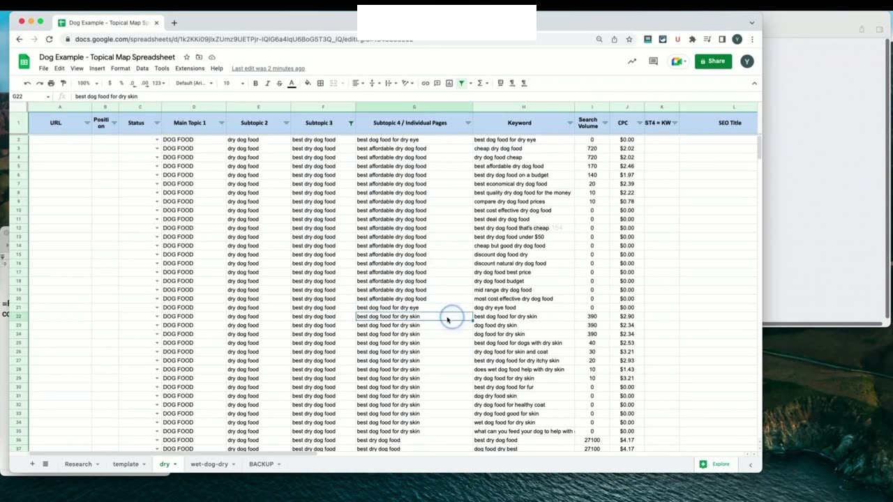
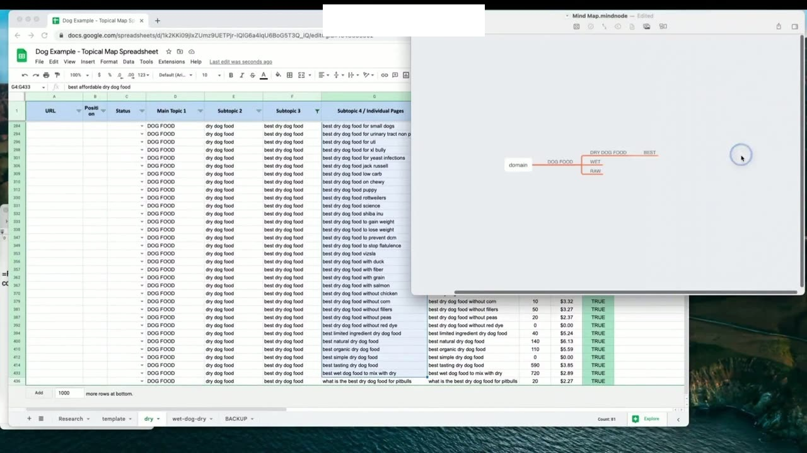
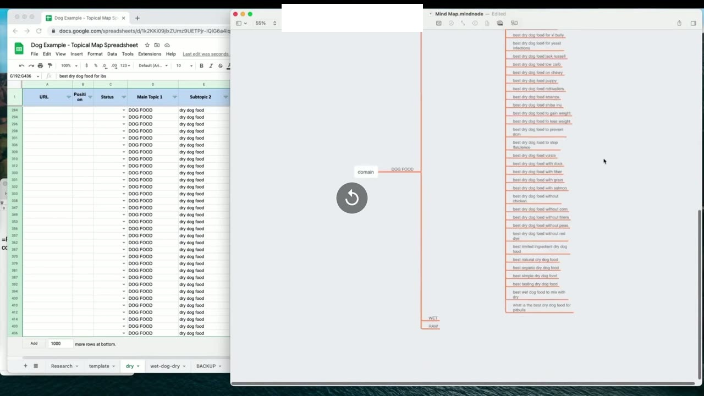

Creating the Mind Map From the Spreadsheet
1. Chuyển giao dữ liệu từ Bảng tính sang Sơ đồ tư duy (Spreadsheet to Mind Map)
Trong bài học thực hành ngắn gọn và tinh gọn này, Yoyao hướng dẫn quy trình chuyển hóa toàn bộ dữ liệu có cấu trúc từ bảng tính Topical Map Spreadsheet sang phần mềm Sơ đồ tư duy (Mind Map).
Thao tác đầu tiên là mở bảng tính và áp dụng bộ lọc tại cột công thức ST4 = Keyword: Chọn lọc những dòng có giá trị TRUE. Lúc này, toàn bộ bảng tính sẽ tự động cô đọng lại, ẩn đi hàng ngàn từ khóa phụ và chỉ hiển thị đúng danh sách các trang bài viết độc nhất (Subtopic 4) cùng các cấp phân nhánh cha con của chúng.

2. Sao chép cấu trúc phân cấp và Dán tự động vào phần mềm Mind Map
Sau khi đã lọc được danh sách sạch, bạn chọn đồng thời các cột phân cấp: Main Topic 1, Subtopic 2, Subtopic 3, Subtopic 4 và nhấn phím tắt sao chép (Ctrl + C).
Tiếp theo, mở phần mềm sơ đồ tư duy (như XMind, MindNode, Coggle hoặc MindMeister), tạo một nút trung tâm (Root Node) đại diện cho tên miền website của bạn và nhấn phím tắt dán (Ctrl + V). Một điều kỳ diệu sẽ xảy ra: Hầu hết các phần mềm Mind Map hiện đại đều có khả năng tự động hiểu cấu trúc tab phân cấp của bảng tính và tự động vẽ ra một cây sơ đồ tư duy phân nhánh đa tầng tuyệt đẹp chỉ sau một giây!

3. Lợi ích của Sơ đồ tư duy trong giao tiếp đội ngũ và Trực quan hóa Silo
Sơ đồ tư duy hoàn chỉnh này mang lại những giá trị vô cùng to lớn cho quy trình sản xuất nội dung:
- Trực quan hóa tức thì các Silo: Bạn nhìn thấy ngay cụm chủ đề nào đã được bao phủ dày đặc, cụm nào còn thưa thớt bài viết để kịp thời bổ sung.
- Giao tiếp hoàn hảo với đội ngũ và khách hàng: Thay vì bắt khách hàng hay người viết bài phải đọc một bảng tính Excel khô khan với hàng chục ngàn dòng, việc gửi cho họ một bức ảnh sơ đồ tư duy trực quan sẽ giúp họ nắm bắt toàn bộ kiến trúc website chỉ trong 30 giây.
- Kim chỉ nam cho chiến lược liên kết nội bộ: Sơ đồ tư duy chỉ rõ bài viết nào cần liên kết về nhánh cha nào, giúp việc xây dựng mạng lưới internal links không bao giờ bị sai sót.

Nguồn và đối chiếu
- Topical Maps Unlocked 2.0 · 03-Creating the Mind Map From the Spreadsheet (Video bài học chính).
- Bản tiếng Anh không có video riêng cho bài học này; nội dung đối chiếu trực tiếp từ slide và video chính.